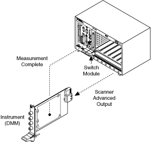
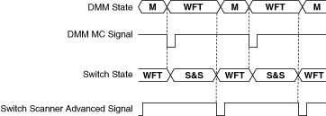

握手允许 DMM 和开关在没有控制器交互的情况下进行测量。控制器以用户指定的时间间隔定期从 DMM 获取数据。握手可以让控制器腾出时间来完成其他任务，并且比立即操作模式更快地进行测量。握手触发器从 DMM 发送到切换和切换到 DMM。这与同步模式不同，同步模式仅从 DMM 发送一个触发信号进行切换。握手模式下扫描速度更快；因此，在使用 NI 产品时，建议使用握手而不是同步模式。
通过握手，DMM 被启动并等待触发。开关模块被启动，执行扫描列表中的第一个连接，并产生一个数字脉冲——扫描高级（SA）信号。数字万用表从开关接收此信号，进行测量，然后生成数字脉冲——测量完成 (MC)。当开关接收到数字脉冲时，它会前进到其扫描列表中的下一个条目。开关模块的继电器稳定后，开关会发送一个数字脉冲并触发 DMM 进行新的测量。请参阅ni.com/manuals上NI 数字万用表帮助中的多点采集主题来确定触发选项。下图表示交换模块和 DMM（仪器）之间的握手过程。
|
注意 某些设备可能不支持扫描。有关支持的功能的更多信息，请参阅您的设备手册。 |

下图显示了握手时序图。

在哪里
M = 测量
WFT = 等待触发
S&S = 切换和稳定
 提交有关此主题的反馈。
提交有关此主题的反馈。 访问ni.com/support以获得技术支持。
访问ni.com/support以获得技术支持。